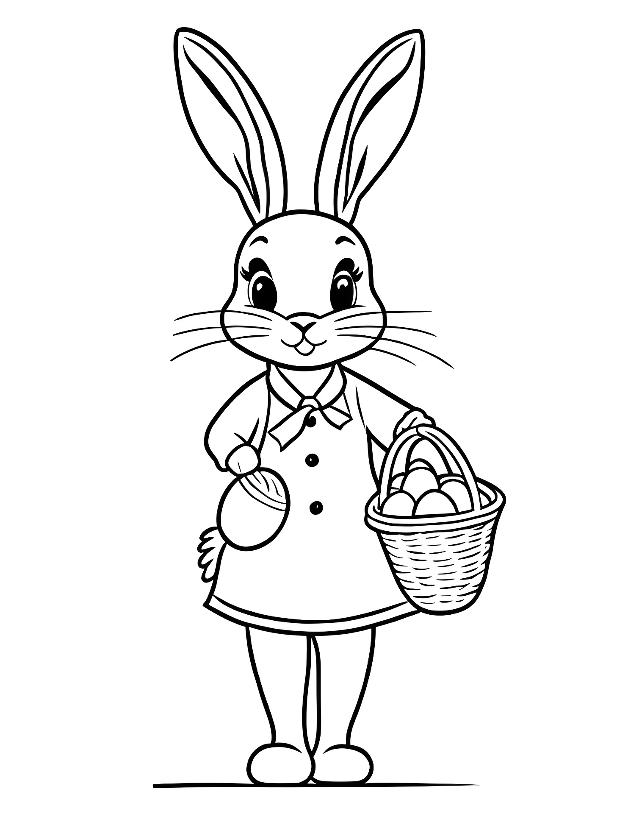
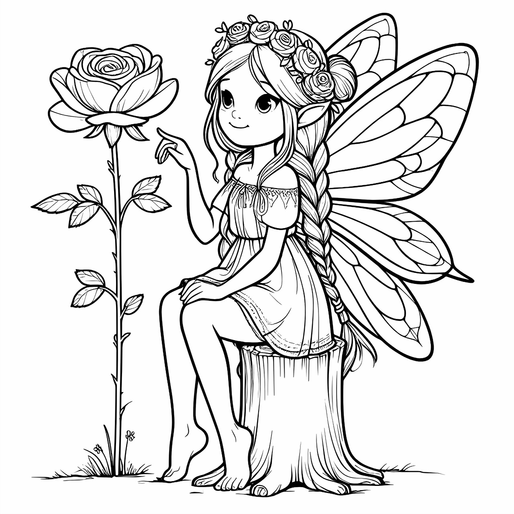
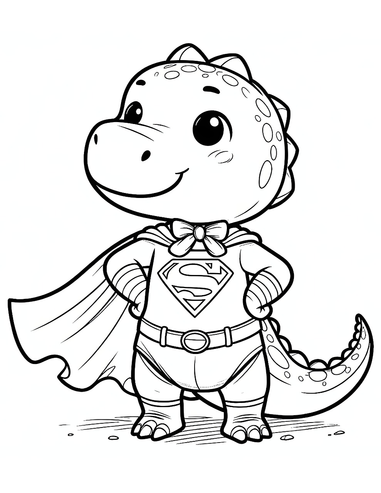
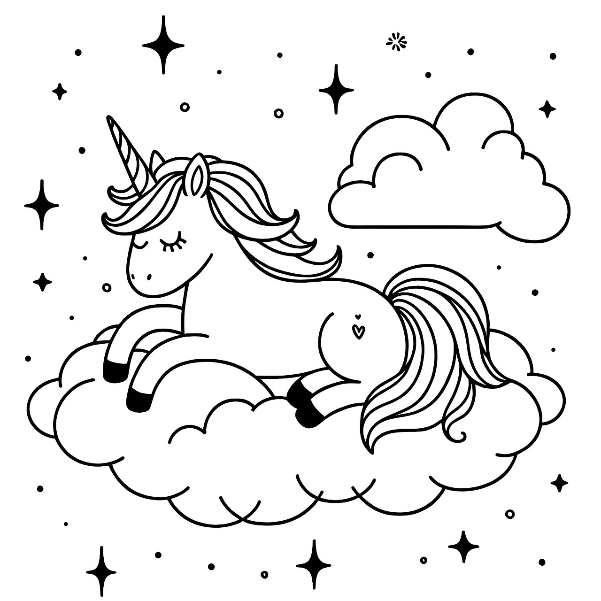

Note: The SVG conversion uses potrace which traces the black outlines.
This creates vector graphics but loses grey tones and anti-aliasing.
✅ SVG Pros:
Perfect clean edges (no white halo)
Scalable to any size
Smaller file size
Pure vector format
❌ SVG Cons:
Loses grey tones & detail
More jagged/pixelated look
Less smooth than original
May need manual cleanup
Image Comparisons
Original PNG

Converted SVG
Original PNG

Converted SVG
Original PNG

Converted SVG
Original PNG

Converted SVG
🤔 Recommendation:
After comparing, you can see that SVG conversion simplifies the artwork significantly.
While it removes the white halo, it also loses quality and detail.
The current PNG images with flood fill tolerance (35) provide better quality for kids coloring.